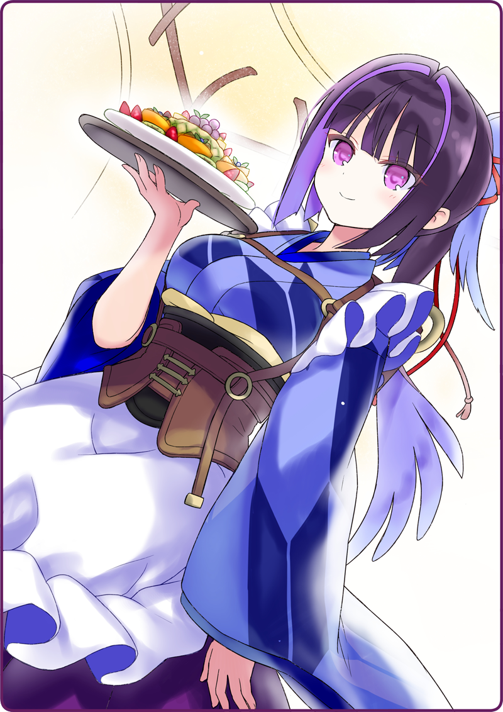

それからしばらく時間が経った――
雲１つ無い、清々しいまでに晴れ渡る空。
窓から差し込む陽光が、黒猫亭のフロアの床を照らしていた。
そんな日射しが作り上げる日向と日陰は、店内をモダンな雰囲気に染めている。
それでも蓄音機から流れる音楽はのどかな物で。
動と静が共在する、優雅な時間を過ごせる空間だった。
黒猫亭のドアが開き、お客様へ挨拶をする鴉羽さん。
灰桜「やっぱり、いつも通りですね」
宇佐美「うん、いつも通りだね」
いつもと変わらない笑顔で給仕している鴉羽さんを、ボクと灰桜は厨房から覗いていた。
先日の動揺した姿がまるで嘘のようだ。
月下「鴉羽は、黒猫亭のリーダーとしての責務を人一倍意識しているので、仕事中はいつも通りであります」
お皿を下げて厨房に戻ってきた月下がボクたちに言う。
灰桜「すごいです。わたしなんて新メニューのことを考え出すと、頭の中がいっぱいになってしまいます……」
宇佐美「そ、そんなに悩んでいたんだ」
灰桜「はい……昨日も夜までずっと考えていましたが、うまくまとまりませんでした」
宇佐美「ボクが預かっているこのレシピ帳を見る？ とりあえずこの中にないメニューを考えてみるのはどうだろう？」
灰桜「そうですねぇ、やはりお客さんには新しいものを召し上がって頂きたいですし……」
灰桜「！！？」
宇佐美「？？？」
月下「！？」
厨房にひょっこりと顔を覗かせてきた鴉羽さんが、注文票を見せながら、営業用の微笑みをたたえてボクたちを見ていた。
いつもなら、叱るような口調になる場面にも関わらず、笑顔だということに、ボクと灰桜、月下まで顔を強張らせる。
宇佐美（いつも通り……かな？）
灰桜（笑顔ですが、怖いです……）
月下（すぐに仕事に戻った方が得策であります）
ボクらはひそひそを話してから、一度うなずいてそれぞれの仕事に戻る。
灰桜「ひゃい！」
呼び止められた灰桜が、その場で背筋をピンと伸ばして立ち止まる。
灰桜「あ、ありがとうございます」
灰桜「わたしが届けたいもの……ですか？」
新メニューの助言に聞き耳を立てながら、ボクはコンロの前で新たに注文されたマカロニ料理を作る。
茹でた後、一晩冷蔵庫で寝かせた管麺を、たっぷりのチーズと絡めて、炒めた玉葱とトマトのソースを添える。
宇佐美「あの……このマカロニのトマトソースは、誰の提案メニューだったんですか？」
ボクはフライパンを揺すりながら、鴉羽さんに訊ねる。
宇佐美「あー、だから軍人さんがよく注文してくるんですね」
灰桜「うみゅみゅみゅ～……、わたしが届けたいメニュ～……みゅ～」
灰桜「はい、頑張ってみますっ」
鴉羽さんはいつもの鴉羽さんに戻っていた。
ちゃんと灰桜に、リーダーとして的確な助言をしている。
自分で答えを見つけられるようにと、わかりやすい言い方で。
これこそが、黒猫亭のリーダーである所以でもあるんだと思った。
宇佐美「え？ わっ！ しまった！」
つい、鴉羽さんの話に意識を取られすぎて、調理が疎かになってしまった。
マカロニが焦げ付き、フライパンからツンとした匂いの煙が上がっていた。
宇佐美「これは、今日のボクのまかないだね…」
はは……、と力なく笑うしかなかった。
＊ ＊ ＊
また数日が経った。
お昼が過ぎ、夕方になり、黒猫亭は一日は滞りなく進む。
馴染みのお客さんが来て、いつものメニューを注文して、慣れ親しんだ時間を過ごしてくれる。
灰桜はお給仕に精を出しつつも、新メニューのことを常に考えているみたいだった。
お皿を運んでいる時も、不意に「あっ！」と何かを閃いたように顔明るくする。
だけど、すぐに首を横に振って、別の案を考え始める。
月下は変わらずマイペースで、そつなくお給仕をしている。
そして鴉羽さんは──……
時間が過ぎていくほどに、笑顔が保てなくなっていた。
お客様から見えない場所で、深くため息を吐く。
ここのところ、いつもこうだ。
夜の用事というのがどれほど憂鬱なんだろう……？
月下「注文であります」
宇佐美「ありがとう。えっと、フルーツ盛り合わせ……？ 珍しい注文が入ったわね」
パフェや、アイスクリームを使ったサンデーは時折注文が入る。
だけど、このフルーツ盛り合わせは、めったに出ない。
ただフルーツをカットして、お皿に盛り付けるだけのメニューで、フルーツをふんだんに使っているだけあって、お値段が少々高い。
あと、カットの仕方も特殊なので、ボク自身のカッティング技術も試される。
宇佐美「じゃあ、やりますか」
包丁入れからペティナイフを取り出して、フルーツを用意する。
リンゴを皮ごとＶの字にカットして少しずつずらしたり、オレンジの皮を紐状に切って、リボンのように軽く結ったり。
レシピ帳に描かれている手順通りにカットしていく。
「カッティングのコツはリズムです♪」という、メモ書きも残されていた。
宇佐美「そう言えば、このメニューは誰の提案なんだろう？」
月下「これは鴉羽であります」
宇佐美「鴉羽さん？」
月下「昔、お世話になったお店のメニューで、思い出に残しておきたいと提案してきたであります」
宇佐美「へえ、思い出深いメニューなんですね」
鴉羽さんが、目を微妙に泳がしている。
メニューにして残すくらいなのに、良い思い出じゃなかったんだろうか？
月下「あの時の鴉羽は、必死でありました」
鴉羽さんが、背嚢の煙突から、ぽんっと蒸気を噴き出させる。
放熱が間に合っていないのか、すこし顔が赤い。
月下「黒猫亭を支えるために、一生懸命だったのです」
月下は真剣な目で、鴉羽さんを見る。
黒猫亭にも歴史がある。
人間の役に立つため、戦争が終わった後の、新しい居場所を見つけるために、自律人形たちも頑張っていた。
誰かに言われて何かをするんじゃなく、自分の意思で進む道を選んだ。
今、黒猫亭のメニューに載っているものは、そういった足跡のような物なのかもしれない……。
月下「だから、このフルーツ盛り合わせが注文されるたび思い出します」
月下は目を閉じて、胸に手を当てた。
月下「あの、愛くるしい鴉羽の姿を……」
鴉羽さんの煙突からぽっぽっと蒸気が噴き出した。
厨房にピーナッツバターシェイクの甘い香りが充満する。
宇佐美「わわわっ、ふ、フルーツ盛り合わせ、出来ました！」
綺麗にカッティングしたフルーツたちを白磁のお皿に盛り付けて両手で差し出す。
月下「……一時避難したであります」
厨房の隅、裏口の扉から顔を出していた。
宇佐美「はは……お願いします」

鴉羽さんはボクからフルーツの盛り合わせを受け取ると、きびきびと給仕した。
背筋がピンと伸びて、綺麗な後ろ姿勢だと思った。
＊ ＊ ＊
鴉羽さんが本日最後のお客さんを見送る。
いつもの、背筋を伸ばしたまま、まるで測ったかのような角度のお辞儀。
おとめ「さて、じゃあ帳面の確認は私がしておこう」
奥宮さんの声に、鴉羽さんの肩がピクン！と跳ねる。
月下「フロアの掃除と看板の片付けは任せるであります」
灰桜「鴉羽さん、お気を付けていってらっしゃいませっ」
振り返り肩越しにこちらを振り向く鴉羽さんの目からは、心なしか生気が失われていた。
鴉羽さんが出かけてから半刻ほど。
黒猫亭の閉店作業も終わり、自由な時間になる。
いつもなら自分の部屋に戻っている灰桜が、まだフロアに残っていた。
店の一番奥の席に座り、眉をしかめながら、黒猫亭のメニュー表をじっと見つめ唸っている。
宇佐美「灰桜、どうしたの？」
灰桜「あ、うささん。実は新メニューのことでまだ悩んでいまして……」
宇佐美「ボクで良かったら相談に乗るよ」
ボクは灰桜に笑いかけながら、対面に座る。
灰桜「今日もお仕事をしながら、ずっと考えていました」
そこまで言って、はっと顔を上げる、
灰桜「か、考えながらですが、お仕事は真面目にしてましたので！」
宇佐美「ははは、大丈夫だよ。灰桜は何にでも真面目なのは知ってるから」
どんなことにも全力。
それが灰桜の良い所であり、ちょっとした欠点でもあったりするのは、みんな知ってる。
宇佐美「それで、今はどんなメニューを考えてるの？」
灰桜「はい。美味しい物をたくさん食べて貰いたいですし、美味しい飲み物もたくさん飲んで貰いたいです」
宇佐美「うん」
灰桜「なので、みなさんが自由に選んで好きなだけ食べたり飲んだりできるように、大きなテーブルに料理を並べておくというのは……どうでしょうかっ？」
宇佐美「それはビュッフェってやつだね。面白いけど、営業形態が変わっちゃうかなぁ」
ボクは頬を掻きながら苦笑する。
宇佐美「灰桜は、お客さんのどんな時の笑顔を見るのが好きかな？」
灰桜「お客さんの笑顔ですか？ そうですね……」
灰桜はこめかみに指を当てて、うーんと考える。
灰桜「……ほっとした時の笑顔、でしょうか」
宇佐美「ほっとした時？」
灰桜「はい！ お食事の後などで、甘い物を食べたときの……にっこりとした笑顔です」
宇佐美「デザートや甘味を食べると、つい笑顔になっちゃうね」
灰桜「わたしもあんぱんを食べると、思わず笑ってしまいます！」
宇佐美「じゃあ、その方向でいいんじゃないかな？」
灰桜「それは、あんぱんをメニューに入れるということでしょうか！」
宇佐美「興奮しているところ悪いけど、厨房にパン焼き窯はないんだよ」
灰桜「あう、そうでした……」
宇佐美「でも、あんこを使ったメニューっていうのはいいかもしれないね」
ボクも灰桜が見ていたメニュー表を覗いてみる。
宇佐美「今ないメニューだとすると、おぜんざいとか、おはぎ、桜餅……」
灰桜「さくらもち？」
宇佐美「お餅の生地であんこを包んで、さらに桜の葉の塩漬けで巻いた甘味だよ」
灰桜「桜の葉っぱには毒があるのではないでしょーか！？」
宇佐美「だけど、塩漬けにすると……」
灰桜「そうでした、大丈夫なのでした！」
春先の毒入りティーパンチ事件は、ちゃんと教訓として灰桜に残っているようだ。
おとめ「ああ、ここに居たか」
階段から下りてきた奥宮さんが、ボクを探していたのか声をかけてくる。
宇佐美「どうかしましたか？」
おとめ「鴉羽、鍵を忘れてしまったようなのだ」
そう言って、黒猫亭の戸の鍵を見せる。
おとめ「だから、届けてこようと思ってな」
宇佐美「帰ってくるまで起きて待っていましょうか？」
おとめ「いや、何時になるかわからない相手を待つのは不毛だ。明日の仕事にも支障がでるしな」
宇佐美「でしたら、代わりに行ってきますよ」
おとめ「だが……」
宇佐美「大丈夫です、任せてください！」
素直な気持ちと、少しばかりの好奇心から、ボクはそう胸を張った。
おとめ「とはいえ、六区は歓楽街だ。君一人を行かせるのも忍びないな……」
奥宮さんは視線を灰桜に移す。
そして唇を開いて──少しだけためらうように、何も言わず──、でもすぐに言葉を発する。
おとめ「灰桜。宇佐美くんと一緒に六区に向かってくれ。そして用が済んだら直ちに帰還するように」
軍人の頃の名残か、言葉の端々に力強さがあった。
灰桜「はいっ、わかりました。わたし、お役にたちます！」

 「いらっしゃいませ。黒猫亭へようこそ」
「いらっしゃいませ。黒猫亭へようこそ」